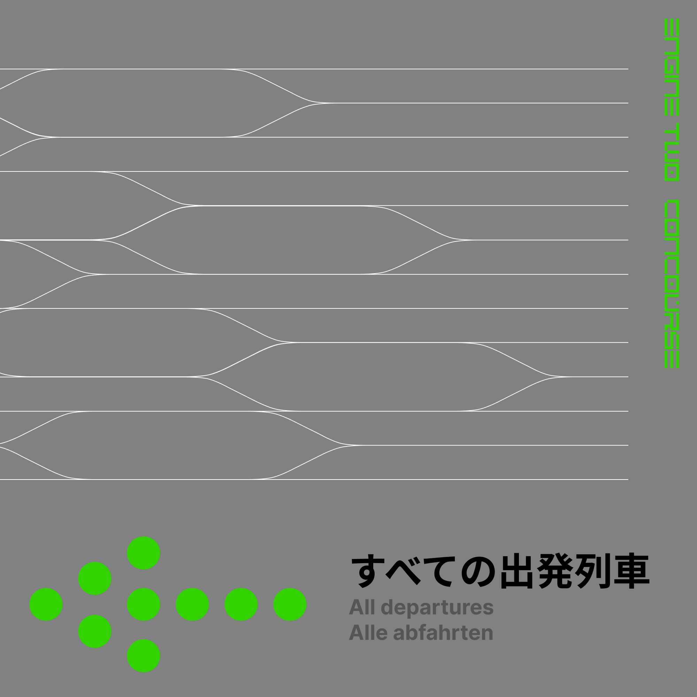
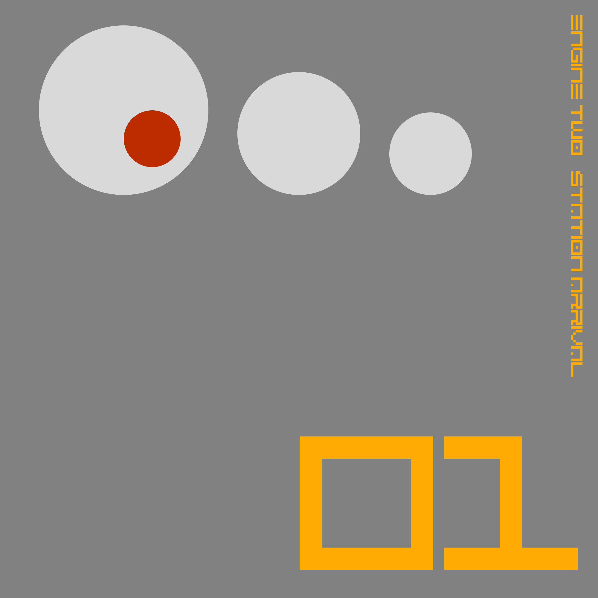
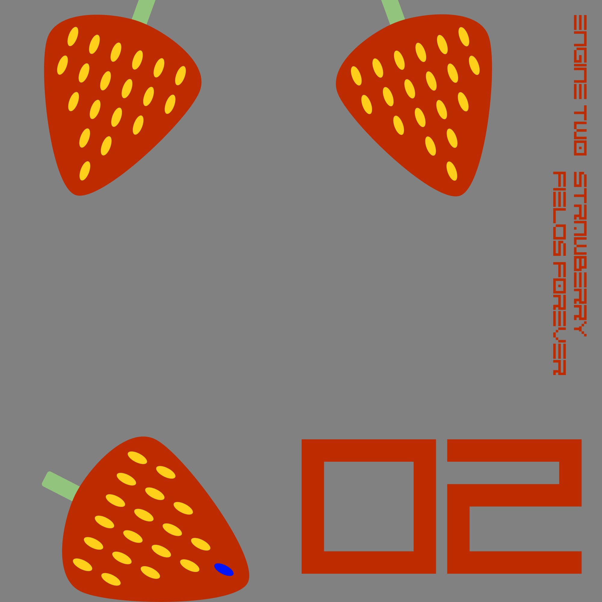
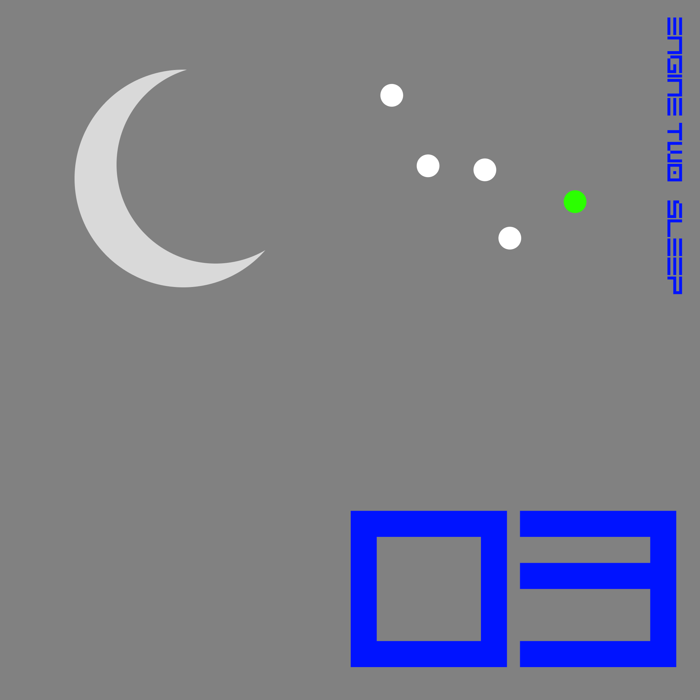
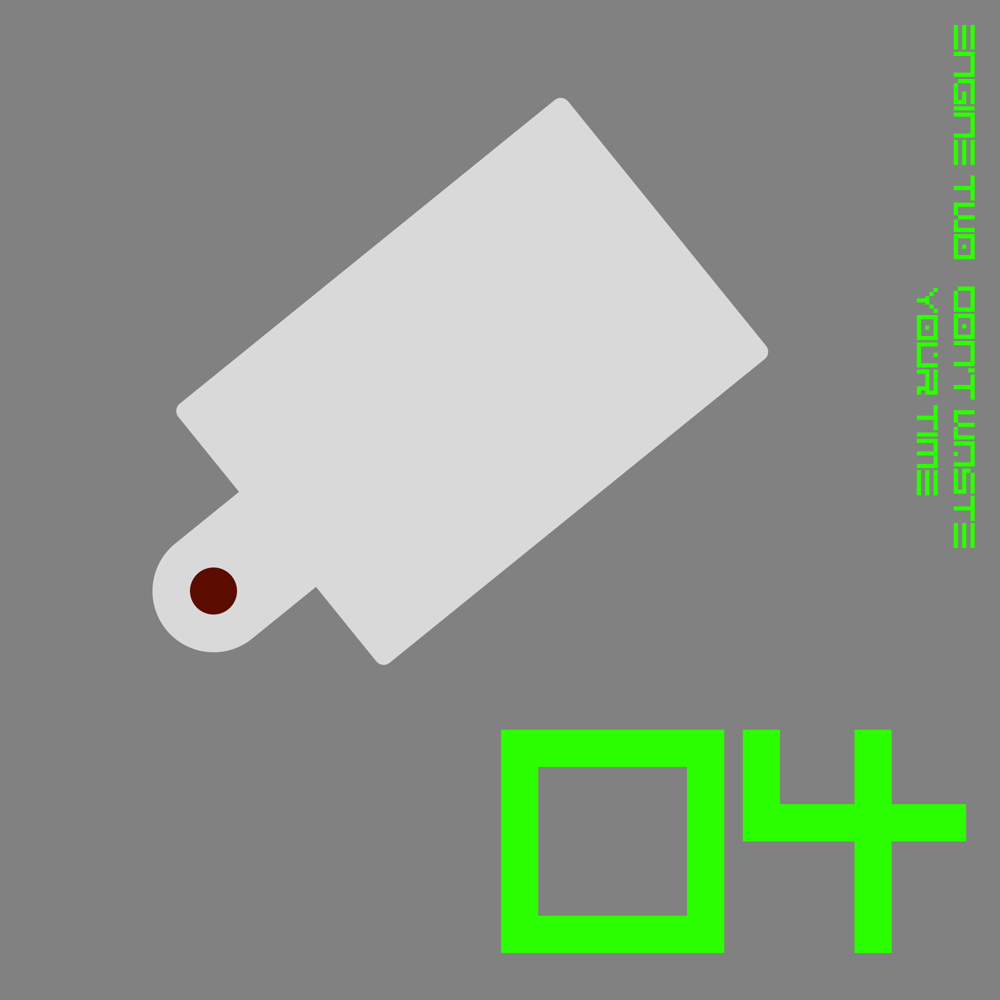
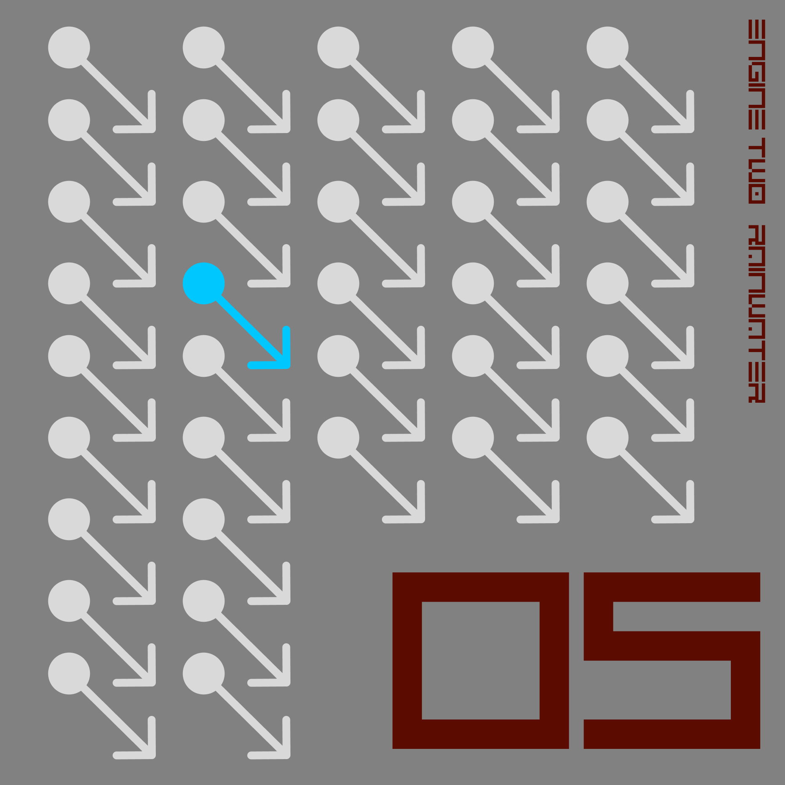
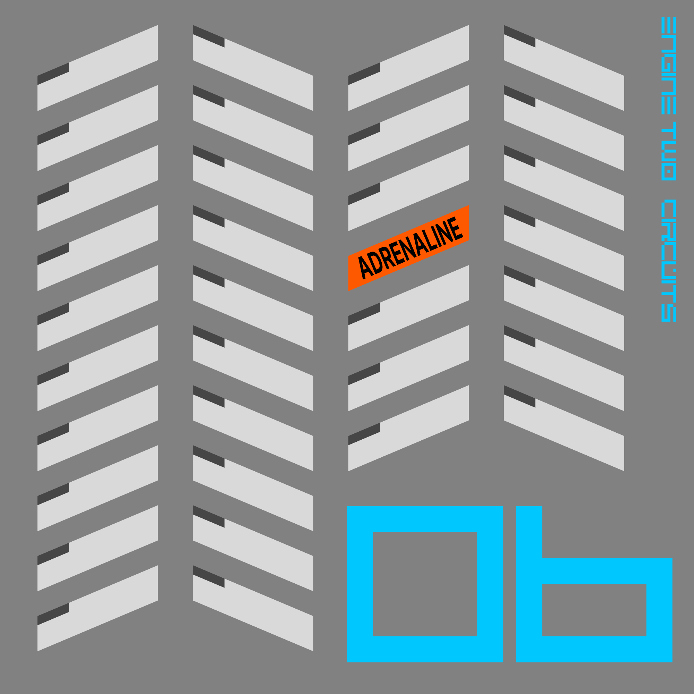
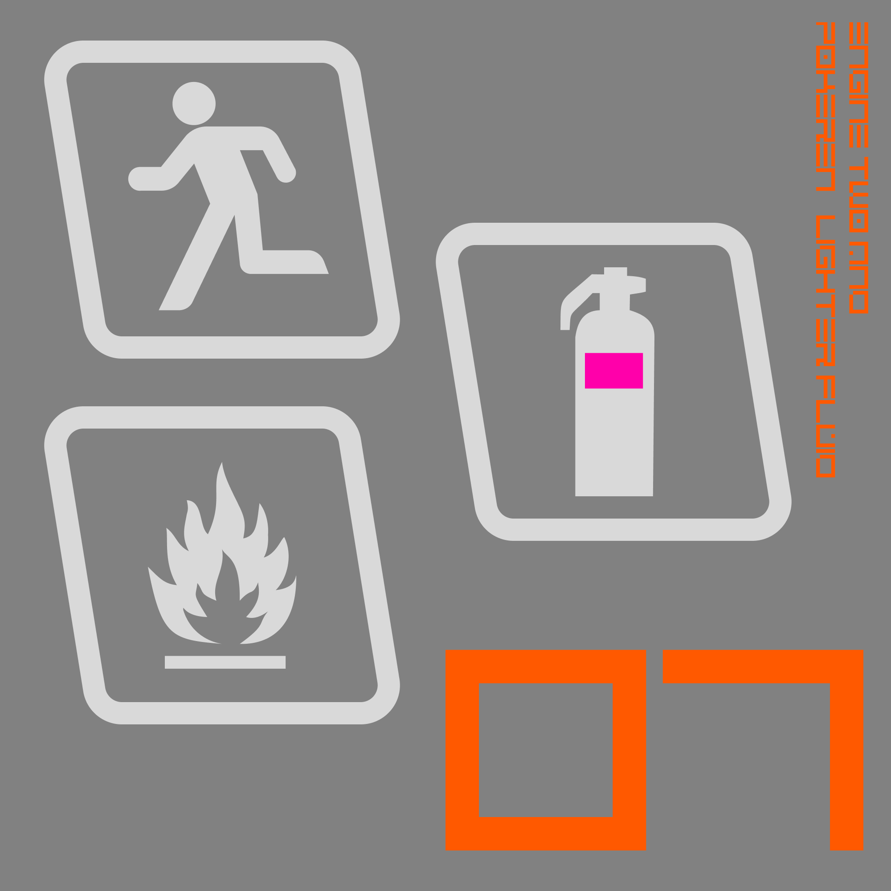

Concourse
Concourse is my fourth studio album, released in its entirety on 18 September 2026. The album had a unique approach to its production, where songs were effectively released as they were created, until the final few months when they were put towards the final album. This helped foster a style-less approach, as the method of having a concept for the album was deliberately avoided. This created the title: a concourse is a large lobby in a railway station, temporarily housing people who soon will travel in different directions. Prior to the album's release, four singles from the album had been released, and an additional two which didn't make the cut were also put out. The album's release style was inspired by electronic music artists (particularly those in the trance genre) who would often include all of their previously released singles, no matter how many there were, on their first album.
As mentioned earlier, the album is deliberately anti-concept; it is home to a large number of styles, all from the breadth of my (electronic) music taste. This was done because I was fed up of coming up with concepts as an attempt to follow-up my first concept album, Nachtmusik, and so songs were often made simply when I had the idea for them, with no inclination of whether or not it would fit with other songs on the album. I also reintroduced the use of interludes, last done on my first album Burning the Daylight Oil.
Background
After my first Engine Two album, Burning the Daylight Oil, I had a few ideas for a follow-up, one of which was an ambient concept album, eventually titled Nachtmusik. Nachtmusik was a success (not commercially, but solely in my eyes), and I wanted to push on to the next idea for an album. The problem I had, however, was with the new promise of a concept album, there were simply too many ideas. I won't list all of them here, simply because they could still happen, but among them was a release to follow-up And the Pandemonium Continued, a concept album set on a spaceship with each song being a different room in the ship, a synth-pop virtual band's debut album, a trance album called Millenium at a Service Station, or a follow-up to Nachtmusik set on a nightbus. What's notable about each of these albums is that they're totally stylistically different from each other. The first is influenced by The Prodigy and Fatboy Slim, the second by the Orb and ambient-era KLF, the third by Kraftwerk, the fourth by Vincent de Moor and Ferry Corsten, and the fifth by Underworld and Aphex Twin. Any of these ideas could still happen (apart from the fourth, which developed into this project), and there's a further three which I haven't mentioned here because they show more promise and/or I still really want to do them. All these ideas were brought about by my widening music taste - when making Burning the Daylight Oil, all I really listened to was trance and house, with a little breakbeat/big beat on the side. Now I listen to those, plus synth-pop, plus ambient music, plus tons of rock and pop, and just a dash of classical. My music taste is all over the place, and I found myself wanting to do three concept albums at once. Plus, after making trance remixes of "Crash Down" and "Popcorn" for The Defibrillated Collection, I came to the conclusion that I was bored of writing the same old formulaic trance replica, and found myself gravitating more towards the 15-minute epics of Underworld or the Orb. The problem was, I essentially had no motivation to commit to any one of the album ideas and focus my music on one particular style for ages. So the question I found myself asking was, "Where do I go from here?"
The answer to this question began to form in summer 2025, when I bought a couple 12" singles from a nearby record store. One of them was Three 'n One's "Soul Freak", backed by "Drop & Roll" on Side B. B-sides in electronic music are pretty rare. Most of the time, the artist will just get someone to remix the original and have that be the B-side, rather than making another original themselves. And as music's moved into the digital world, the concept of sides in the first place has become abstract. Three 'n One also had an album from around the same time, which shared its title with the single I'd bought, and having a look at the album, I thought about something I'd noticed in the many electronic music albums, particularly trance albums, that I'd been listening to. The album contained practically all the A-sides the band had released up until that point: 6 among a 12-song tracklist. I'd imagine the band weren't thinking about a potential album when they released the first of those singles two years prior, but with the buildup of singles and a push to make album tracks, the band had an album on their hands. I liked this concept of just stacking up singles until you had an album, rather than making an album all in one go and then releasing singles from it.
This, in turn, led me back to the oldest idea I had, that being the album I originally intended to follow-up Burning the Daylight Oil with. The working title (although I hadn't worked on it at all) was Turn, as in a turn in my music making style. The album, stylistically, was going to be the same as Burning the Daylight Oil: 80 minutes of whatever I'd made in the studio for the past year or two. With all the ideas I had floating around for releases, what if I approached albums like this; making what I like, whenever I liked, releasing singles as I went, then finally putting the whole thing together into an album. In the end the album would contain some new original tracks - it wouldn't just be a glorified compilation album - but it would be a casual approach, with no style, no drive, no concept, nothing. That sounded like a pretty sweet deal.
Recording and production
Recording for the album started very sporadically in 2025. In this time, only two songs were completed: a demo of "Sleep" and a track which would later be cut from the album. However, proper work began later that year when I had a day off in October which I decided to devote entirely to writing music. In the end, on this mild October day, I completed just one song - a song which I'd already started on, intended for a friend's game before it got too long and out of hand, and just needed another few hours of work to finish - this ended up being "Station Arrival". I decided to put this out as a single straight away, and made artwork inspired by both the Designers Republic and the KLF (particularly their numbering of singles) to accompany it. The numbering of the single as '1' was at first very much open-ended; I hadn't come up with the idea for releasing future singles in the series yet, but as the idea took hold, I began work. I expanded the demo of "Sleep" greatly to make it fit to be a single, but ended up releasing a cover of "Strawberry Fields Forever" first. Both singles use the robotic speech synthesis which would later become the album's defining feature, used in the announcement of the album and two other songs on it. Motivation died after these two, but the fourth single, "Don't Waste Your Time", was released in February after picking out the bassline from an album I had listened to. Also made around this time was "Scene Transition", which I must admit frustrated me a little bit with how good and yet innocuous it was.
After this was a long period with almost zero recording, apart from a demo of "Rainwater" and "Midnight Ice Rink". By June, I felt that I wanted the album out soon-ish, and that if I wanted it to come out soon I would have to put in motivation and stop relying on the "make a song whenever I feel like it" approach. "Rainwater" was expanded into a single, but following this I entered into a pretty heavy stage of writer's block. I had no ideas for any more songs, and was struggling to even write a melody or chord progression. In the end, I fought through the block and made "Circuits". Then followed a final push to finish the album, with "Break" / "Regrets" being finished in August and "Blue Sway", "Tonic Water" and "A Dying Flame" finished in September, notably after I had announced the release of the album. I must be honest, the reason I covered two songs in these final stages was because I was running so low on song ideas. Both I had come up with the idea of covering previously.
The only other track, "Lighter Fluid", was uniquely written with a friend of mine, PokéRen, as part of an attempted music duo which never took off, and so she gave me permission to put the song on this album. It was written (as a demo) in January 2024, and I produced my final version of it in August, as a test of my new equipment before starting on Nachtmusik. Her final version, which was to be the other half of a double A-side, never came about, and we decided to hang up the towel on the project in July 2026.
When compiling the tracklist for the album, two singles, "Strawberry Fields Forever" and "Rainwater", were excluded because I felt they weren't good enough for the album, however some elements of "Rainwater" did make it onto the album when they were re-used in "Tonic Water"
Artwork
The artwork for this project is heavily influenced by the style of the Designers Republic, a design team who have worked on Wipeout and worked with Gatecrasher, Aphex Twin and Pop Will Eat Itself. I was most influenced by their Wipeout work, and even stole a few fonts from it! However, unlike the extreme visual noise featured in Wipeout (just look at this poster), I opted for a sense of simplicity, with the title, single number (an idea inspired by the KLF's Pure Trance series) and basic polygon artwork being the only features atop a grey background. The polygons would reflect the single's name or theme - for "Station Arrival" it's the puffs of smoke from a steam engine, for "Strawberry Fields Forever" it's… well, strawberries, and for "Sleep" it's a crescent moon and the constellation of Casseopia. Each artwork would also contain two unique colours - one was the main colour used in the title and number, while the other was used somewhere in the artwork, and would be the main colour for the next release. Of the single artworks, my favourite was "Station Arrival", as I felt I chose a good colour for it and it felt the most detached from reality (other singles my friends could glean what I was depicting, but only on this one could they not figure it out).
{kind=link}
For the album, I worked the cover out in an afternoon. It was based around a line pattern I had seen in some Designers Republic projects in the past, such as on the single for the Orb's "Blue Room", where a single line expands into a lozenge, and then back down to a line. Most of the time working on the cover was dedicated to manipulating the lines to curve properly. I decided to opt for a little symbolism and make each line represent a track on the album, with the interludes remaining lines the whole way, and therefore dividing up sections of the album on the cover. This also meant I could use the set-up to my advantage for the YouTube upload and back cover, where the tracks are written on top of their respective lines. The only other element on the cover is a sign at the bottom, pointing to "all departures", i.e. a railway concourse. The arrow design, I must confess, is totally stolen from a Pop Will Eat Itself cover, while the text went through a few iterations, including one utilising visual noise, before deciding on the final version. The Japanese text being the most prominent is not because I'm a weeb or anything, it's just another trick out of the Designers Republic playbook (Japanese text is all over their stuff). Besides, having the most prominent be the English looked boring. And the German text is there because I discovered on a recent rail trip that the German word for 'departure' is 'abfahrt' and couldn't let that go unused.
Songs
"Circuits"
One of my favourite video games is Wipeout 2097; I have sampled sounds from it in the past, and the artwork of this project is inspired by it. But one of my favourite things about the game is its music, which is a collection of the best and brightest in techno at the time. The previous game in the series, the original Wipeout, had a soundtrack almost entirely composed by Tim Wright, under the name CoLD SToRAGE, who, by his own admission, had never made techno before. Somehow, he still absolutely knocked it out the park, making one of my favourite techno tracks, "Messij". With its distinctive melodic bass which opens the track and its use of different sections (rather than the techno standard of the same thing for five minutes), it was and still is a memorable track. "Circuits" was my best attempt at re-creating "Messij", and I have to admit, I actually did pretty damn well with it.
The first part of the track which I made was the drum part, which is itself a combination of three drum breaks and a drum machine. Then, after banging my head on the wall repeatedly whilst announcing that I'd never write a note of music again, I wrote the opening bassline. At first, like "Sleep", I tried to copy the structure of "Messij" pretty closely (especially that really punchy kick drum), but by the end the song had become its own beast. The opening samples of a count-in (and all the "Come on!"s and "Hit it!"s sprinkled throughout) were an idea I'd had for a long time, tracing back to a never-finished attempt to make a proper house track in 2022 while I was dealing with one of my biggest bouts of writer's block. The B section was made by mapping a vocal sample to a keyboard and playing a bunch of notes (most importantly, with a huge amount of stereo delay over it) - the full sample was actually a phrase which I'd recorded off of BBC Radio 2 which I wanted to use at some point, but I only ended up using the very start of it. This use of stereo delay was inspired by a small part of "Whitney Joins the JAMs" by the Justified Ancients of Mu Mu.
For me, while the track certainly does hold on in the first half, it really kicks in with the introduction of that 90s Korg M1 piano halfway through. Originally the piano was just an attempt at making another new section, like in "Messij", but once I heard the chord progression playing out of it, I knew it was going to define the rest of the track, which it then did. I ended up in a similar situation as my old song "The Brighter Side of Things" from And the Pandemonium Continued, where five minutes in I had reached the natural end point of the song, but I couldn't let myself just stop it there, so one more section had to go on the end, making the song seven minutes long.
The song, like all good breakbeat tracks, finishes with an off the wall vocal sample which has little connection to the rest of the song. The sample comes from (the Netflix dub of) the anime Neon Genesis Evangelion, where the protagonist Shinji mutters, "Why do we have to get all worked up and be loud like this?". I was re-watching Evangelion while working on the song, sometimes literally watching an episode, working on the song some more, then watching another episode, and at some point I decided I wanted to include a sample from it. Before watching episode 12, I declared that I would sample one line of dialogue from the episode, since I hadn't got around to finding a good one yet, and I chose that one, the joke being that the song is so stupidly loud and fast by my standards that Shinji is asking "why we can't just go back to the nice non-threatening ambient stuff". The artwork for the single was also fully nicked from the GUI on the computers in Evangelion (as any fan should immediately recognise), which is one of my favourite parts of the series. The song was slightly remixed for the album.
"Blue Sway"
The original "Blue Sway" was an outtake from Paul McCartney's McCartney II album, which was officially released on the 2011 special edition, having been recorded in 1979. And while the original is basically just a six minute instrumental jam, it's become a favourite deep cut amongst fans. I've wanted to cover it for a while, with plans dating back to an attempted follow-up to my breakbeat EP And the Pandemonium Continued which never happened. Running low on ideas in the late stage of the album's production, I decided to pursue the option, and quickly figured out the chords and cobbled together a rendition of the song which replicated every part in the original. With this to work with, I added a few extra bits, including a drum break I recorded myself and a sampler-based synth pad to create that slightly ethereal opening. Unlike the original, I decided to put the bass part centre stage, since of course with McCartney on the bass the song has a mean little part. The double-tracked maracas were re-used from a different cover I did, that of "Strawberry Fields Forever", which ended up being cut from the album. Also, a small interview snippet from McCartney describing how McCartney II was made was put at the end.
"A Dying Flame"
Strangely enough, this song was originally entirely different. Its original form was a short demo I had completely forgotten I'd made and then re-discovered in the latter stages of production. Its name came from the opening lyric of Chris Rea's "Fool (If You Think It's Over)", because of the spare guitar plucking in the track which reminded me of his style. The fact that it's followed by a song with a title which would imply rejuvenating a fire is just a coincidence. But then, when working to make another song for the album in the final weeks before release, I dug through some old files from the Nachtmusik days (like I said, I was desperate for ideas towards the end) and found an unfinished project. I started working on it, and after a bit of fiddling came up with the chords in the song, and then the additional parts on top. The only bits in the original file were a drum part and vocal sample, both of which were then discarded and replaced with a new drum part and vocal sample. The drum part was done live on my electric drum kit, with additional flourishes added. Also, a key inspiration for this track was a song from the most random corner of my life: the theme from the Wi-Fi menu in Mario Kart Wii. Yes, seriously.
I did want the song to follow "Break" as a full-length track on the album, but I was struggling to develop it to that length, and besides it wouldn't fit onto an unmixed CD, so I decided to settle with the short length I had already and replace the first interlude on the album with it, but kept the name of the original interlude.
"Lighter Fluid"
Years back, my musically inclined friend PokéRen and I agreed we wanted to make music together. After talking about it but never acting on it for far too long, I put down a date in January 2024, when I was towards the end of producing Burning the Daylight Oil, to make our first song together. We spent the day working on her laptop, and ended up with a demo for "Lighter Fluid", the idea being that instead of having another session together to perfect it, we'd make our own versions and release it as a double A-side.
Habitually for this project, it was back to talking until August 2024, when I had just upgraded my home studio, and wanted something to give it a test run. I produced my version of "Lighter Fluid" over the course of a day, getting used to how things worked along the way. By the end, I had a trance track which was so different from what I had made before - I had only just released Burning the Daylight Oil, on which the best track was good but didn't really sound like trance, and now I had a fully fledged '99 supersaw trancer on my hands. If you don't believe me, listen to the track, which is presented here unchanged from its original form, and then "For What You Can Create" - entirely different ballpark.
So why didn't I put it out immediately? Well Ren still had to make her version, and again in the theme of the project, that didn't really happen. We made a few other little things together, but "Lighter Fluid" was never properly released because she didn't really like the song, and that's fair enough (I must admit it was written very much in my style rather than hers). In July 2026 we agreed that our music tastes were so far removed and the project so stagnant that we should leave it there; we did make one personal project together which we were both very satisfied with, so it wasn't all in vain. And plus, since "Lighter Fluid" was now not waiting for its counterpart to be created, I put it onto the tracklist of Concourse, making it by far the oldest track on it. I did consider releasing it as a single as soon as I got permission from Ren to put it on the album, even going so far as to make the artwork (see right), but decided to hold off and prioritise delivering an album with a decent amount of new material.
"Station Arrival"
"Station Arrival" began its life when I decided to make a few themes for my friend C0mplexity's train-themed Roblox game. One of the potential sections of the game was a nightclub (yes really), and I was yet to make the nightclub's theme, although I had made the theme for the disco (which was different, I promise). I started work on the nightclub theme in August 2025, and stole a technique from Flood Escape 2 by using a classic Roblox sound as the track's bassline. After finally settling on a melody (it took several attempts), I realised that the theme had got totally out of hand for a theme for a Roblox game, so I basically just remixed the disco theme and gave my friend that, leaving the start of "Station Arrival" as the only finished part.
Later in October, I had a day off which I decided to dedicate entirely to making music. I'd sit down and spend all day working on some songs - maybe I'd make an EP, or even an album at a stretch. I wrote a few bits in that session, but the only completed song which came out of it was "Station Arrival", which the first few hours of the session dealt with. Thinking throughout the day, I at first wanted to slate this as a B-side and then write the A-side for it. The problem was, even though I had an idea for the A-side, I just couldn't really get it to work - and indeed, that song is still nowhere near close to being finished. By the evening, I had decided to release the track as it was with no B-side. The following morning, I came up with the title "Station Arrival", a nod to the train-themed game it was originally going to be included in, and also the fact that it was the first release in the series, despite not knowing what the series even was yet.
The track in the end was a standard '99 trance track which I rather liked, despite previously getting bored of writing in the genre. It was remixed slightly for inclusion on the album. It's also not lost on me how the first track in this Concourse project also has a train-themed title, in particular one about arriving, presumably to unload its passengers who will walk onto a concourse. It's the closest the album has to a title track, but I'm afraid it's a mere coincidence. Still, a bloody good one at that.
The song is slightly remixed for the album (in particular, helping to bring it out when mixing it in after "Lighter Fluid"), by bringing the drums and bass up in the mix at the start of the song.
"Tonic Water"
"Tonic Water" is a sort-of follow-up to "Rainwater", the fifth single from the project which didn't make it onto the album tracklist because I felt it wasn't good enough. "Rainwater" is a bit murky and not the nicest to consume, while "Tonic Water" is cleaner and more suited for the nightclub. You can see where the names came from. The two pieces actually only share one riff, which I simply reused because I felt it was so good that leaving it to wither away on a pretty rubbish attempt at a song wasn't doing it justice. "Tonic Water" itself started with some chords and a riff heard in the back of the track, and I decided to pursue it because I was running low on ideas and I wanted the album to have a three-piece suite of trance tracks, which would then be mixed together, inspired by the albums of Paul van Dyk (Out There and Back) and Orbital (Orbital II). Making it rekindled my boredom of making this style of trance, as it felt more functional and by-the-books than it did creative. I even considered stopping it halfway and finishing it with an old voicemail where I called my own phone and muttered, "This isn't going to work, is it?" But I finished the track in a night and mixed it with the other two trance tracks the following day.
"Scene Transition"
In December 2025, I came back to, as everyone does, Christmas music. One of my favourites among them is Paul McCartney's "Wonderful Christmastime", taken from the sessions for his McCartney II album (the second time a non-album track from these sessions has had an influence on this project). The album is a favourite of mine because of its synthesised nature, and so naturally curiosity got the better of me and I looked into what synths he used to make it. Following a guide online, I figured out the sound on the Yamaha CS-80 (well, an emulator of it) which produced the song's signature opening chord pattern.
That was all fun, but while still fiddling around with that sound in particular in January, I came up with a few neat chords. Figuring I could use them for the album, a bit of work produced an accompanying melody, then drums, and then (most importantly), a smooth little bass part. Listening to the result, it sounded like… loading music for a Crash Bandicoot game. Great, not exactly a single.
The song frustrated me quite a bit in the coming months when I could hardly write a thing for the album. How had I managed to write a song that was good, and yet so totally banal that even putting it on the album seemed like a bad decision? It kind of reminded me of the "Bowling Theme" from The Defibrillated Collection. In the end, when I decided on including interludes on the album's tracklist, I put the track in the middle of the album, but still treated it as a gag by having it introduced as hold music while the rest of the album is being loaded.
"Don't Waste Your Time"
This song is the purest example of what I was trying to capture with this project. After hearing a bass sample while listening to The Allman Brothers' album Eat a Peach, I decided it would make a good big beat song, like that of Fatboy Slim or the Chemical Brothers. After assembling samples from all across my music library, the track basically just… happened. I didn't really make it to be part of this project or because I had motivation to make new songs, I just had this new idea, and over the course of a week, I made it a song. Oh, and yes, there isn't an original note in this song (apart from the bells, although even then the bell sound is sampled from "Mother" by John Lennon). Everything, and I mean everything is samples. No peeking, copyright lawyers!
The only thing about this song worth mentioning here is that the final drum break at the end is actually a live drum solo; I mapped the drum sounds from the sample I was using to parts of my electronic kit and then played a solo using only those drums (kick, snare and crash).
"Break" / "Regrets"
Despite how it may sound, these two songs were not made separately and clamped together; instead I made "Break", felt it wasn't going anywhere, and tried putting "Regrets" on it, which worked. "Break" was just an attempt in the latter stages of production to make any kind of drum and bass track; the parts were based on a jam of which there was little material worth salvaging, while the drums were a custom kit made of sampled parts. The drum break in the middle, from which the track gets its name, was also done live.
The "Regrets" half is more complicated. "Regrets" is a song from Ben Folds Five's 1999 half-concept album The Unauthorized Biography of Reinhold Messner. I was introduced to the band by a friend, and they have since become one of my favourite groups. But "Regrets" always stuck out to me, because as someone who'd listened to far too much electronic music, the song seemed to be just screaming out to become a drum and bass tune. The BPM was right, the drums on the track were already most of the way there, the tonality was that right kind of minor key affair that drum and bass works well with, and the chords were the nice, complicated jazzy sort which seemed to have weaved themselves into jungle and drum and bass. Since the stars were aligning themselves so clearly, and I'm good with stars, I recognised this connection almost straight away when I heard the song in April 2026, but after getting the chords online and putting them atop a sample I had lying around, it didn't quite work.
Looking for something else to rejuvenate the "Break" track I'd been working on later down the line, I worked a bit more on the "Regrets" cover and got it sounding good. I moved the bits over to the "Break" file and spent a while working on it. The original sample I used on the earlier version of "Regrets" stayed, despite having a different drum pattern in "Break", simply because it worked better with the material. I did consider singing the part that Folds sings in the original, but I remembered that I can't sing and so settled for the robot voice again, but let it just speak the lyrics straight without pitch correction, unlike "Strawberry Fields Forever". I did try to get it to fit its delivery into the straight style on the original (which wouldn't sound out of place for a synthesised voice) but quickly found the only way to do it was to cut it into place manually, which would take far too long and wouldn't sound good anyway. I also incorporated the sleepy spoken word part from the previous track on Reinhold Messner, "Your Most Valuable Possession". Since on the album the part was done by a different speaker (Folds' father), I also used a different voice for it. Due to the other melodics, the voice is a bit buried in the mix, so perhaps what the voice is saying is only audible to those who know it already…?
Finally, I did attempt a big beat rendition, set atop the drums from "When the Levee Breaks", of the epic half-speed ending of the original "Regrets", but it didn't really work, so instead it just segues into the next track on the album…
"Midnight Ice Rink"
This interlude was one of the few things I made between "Don't Waste Your Time" in February 2026 and "Rainwater" in June 2026, when I was having a bit of writer's block, and frankly wasn't even thinking about the project that much. Still, when messing about with the keyboard one night, I discovered the little "beep" that plays throughout the track. I thought it was quite nice, particularly on the chiptune synthesiser I was using, so I wrote a melody for it, but that was all. It sat around for a while, and eventually I decided I wanted to add some rain sounds to the back of it, simply because I had discovered over the break how much I loved them, and declared to a friend one day that "I'm going to put them on my next album!" In the end, it quite strongly reminds me of the ambient themes from Toby Fox's Undertale or Deltarune, like "Quiet Water" or "Glowing Snow", which incidentally are some of my favourite songs off their respective soundtracks.
"Sleep"
This track was released as a single on New Year's Eve 2025, and was done so because it was exactly a year after I made the original chord progression. I was bored in the latter hours of the night in 2024, and frankly the Graham Norton Show isn't much to watch when you don't care for any of the celebrities on it, so I sat down at the keyboard and worked on some chords for a while. The chord progression in "Sleep" was among the bits I saved to a file called "job for next year". In summer 2025, I made a short, three-minute demo version of the song, which was originally then going to be included as an album track for this album's eventual release, as I didn't see it fit to be a single at the time. However, in November, after releasing "Station Arrival", I came back to it to try and turn it into something which had single potential. The problem I had was that it was quite simple: it had the chord progression, a percussion bit in the middle (inspired by "Tour de France" by Kraftwerk which I was listening to in the summer), and that was about it. If I was going to turn it into a single, it needed to be much longer and have much more to it. So, I thought back to "Tour de France", which is similar in terms of what elements it has, that being quite little. I thought about how Kraftwerk structured that song, and tried to recreate it. I created a counter-chord progression, like "Tour de France" does, and then moved onto the next section in the Kraftwerk number, which had vocals. Now, I'm not a vocals guy - in Nachtmusik I broke new ground by including vocal samples, so singing is a far out idea for me. Therefore, I instead thought about using an old-sounding text-to-speech robot. After a little searching online, I discovered that MacOS comes with one installed which included old MacTalk algorithms which had the exact sound I wanted. So, I fed some nonsense lyrics which I'd written down ages ago into it, and we were on a roll. From there, I no longer needed to consult Kraftwerk for how to do the structure; I was simply running wherever the musical direction took me.
However, as I was working on the third verse, I realised the lyrics began getting kind of meaningful. I was writing out lyrics on the fly based on Karl Hyde-esque phrases I'd written down a while back, but this third was developing into a piece about the fear of death and unconsciousness. And so came the title of the song, "Sleep". I added one more verse at the very end which deals with this directly, and the song was finished. With a bit of mixing and panning shortly before its release (after putting it off for ages), I released the song exactly a year after I wrote the original chords, a suggestion a friend had when I told him the story about how I came up with it.
"Strawberry Fields Forever"
This is one of the two songs not included on the album, but released as a single in the Concourse project. Strangely, I made this song after I made the following single, "Sleep", but because I thought "Sleep" was far too much of a tonal jump from "Station Arrival", this was released as the second single, and "Sleep" was released as the third. Seeking a middle-man to mellow out the mood before reaching "Sleep", I conceived the idea of an ambient cover of "Strawberry Fields Forever" with a classic text-to-speech robot singing in the style of Louis Zong's "Hello World". I'd discovered the text-to-speech robot while working on "Sleep", where I wanted some words in the song and discovered the inbuilt text-to-speech feature on my Mac, complete with ancient algorithms from the pre-OS X days that created the exact sound I wanted. "Strawberry Fields Forever" is a Beatles song I've always admired, primarily for its wonderful chord progression in the verse, which unfortunately goes underrepresented in the original. Take 7 of the song features the chord progression much more prominently, and that was the main inspiration behind my version - the Candyflip version also had some influence. I had also been playing with the song a bit in the Burning the Daylight Oil sessions, but I never intended to make a song out of it then.
The first sound you hear in the song was my first attempt to get the 'ambient' sound I wanted working, before it segues into the second attempt. I tried a few pieces of software to get the singing robot to work, but all ideas fell through, and mostly led to AI sites. In the end, I simply took the output of the text-to-speech feature and pitch shifted it manually, creating a kind of weird effect that made the song seem quite comical to the people I played it to. The funniest part was probably the backing vocals, which were just a selection of pitch-shifted "aah"s. I kept them in because they worked well for the texture, but turned them down because otherwise you could hear what sounded like the thing dying when it reached for the high note! Originally, the synth that plays the melody alongside the singing was just a guide track while I worked on the vocals, but I felt that they really helped ground the listener (and made the shoddy pitch-shifting job sound a bit better), so they stayed in. The drums were all done live on an electronic kit, with the output fed via MIDI into my DAW so I could customise the sounds and panning. It took a few takes to get it right, primarily because I didn't really grasp how Ringo's simplicity on the original helped keep it going, and I played with complicated grooves. In the take I eventually chose, I laid off the complicated stuff, sticking to Ringo's simple style, and only indulging myself in a bit more bashing in the final section, where it seemed appropriate. The double-tracked maracas in the final section are actually beads in the hand of an old teddy bear played very close to the microphone, which I added when I felt the section needed a little more highs, and the double-tracking was simply because it felt like a just nod to the Fab Four's studio stylings. I reused the sound in "Blue Sway". The section itself was a direct nab from the Beatles' own Take 7 version, which ends the same way. In both versions, this section is my favourite because it puts that chord progression which I love so dearly on full show. And to close, the classic Mellotron flute opening from the original is included because I just had to, followed by reverbed sounds of a single synth singing the chorus, which was included because I left it like that by accident, and then discovered just how good it sounded and decided to keep it.
An idea I also had was to include an entire second section, the same size as all that was before it, that would act as the counterpoint that the original had between light psychedelic to "John's had one too many lads". This section would have included actual singing, by me (although it would be less singing and more screaming through several layers of insulation for maximum experimental insanity), including singing parts of it in reverse, use of time stretching in the same way breakcore does, layers upon layers of synthesisers… all that good stuff. Naturally, with how ambitious it all was, I didn't even attempt it. I called it a day with the first half, and even though at first I felt it wasn't substantial enough to be a single all on its own, in the end I decided to put it out.
One thing to note - the version on YouTube has a bit of a mastering bug with the bass drums mixed way too loud. I promise it wasn't intentional, YouTube just mixes the bass really high for some reason!
"Rainwater"
"Rainwater", the other non-album single from this project, started essentially as a downtempo jam, over the top of a distorted drum break which I'd recorded. I just started adding melodic parts, and then didn't really stop. A little while after this, I listened to the Man With No Name album Moment of Truth, and was inspired to make a Goa/Prog Trance track of my own. Trance relies on lots of melodics working together, but if there's one thing in music I'm bad at, it's melodics. So, I decided to turn the jam I'd made into a Trance song by dropping the drum sample, speeding up the project, and changing the synth sounds used. I made the intro, but afterwards tried to incorporate a long vocal sample of a full verse, since it felt appropriate, but couldn't get any to work. The track remained unfinished like this for some time as I still wanted to use a vocal sample but couldn't be bothered to find one.
In June 2026, I decided I really needed to lock in (as the kids say) and try to make enough songs for an actual album. Rather than starting on a new idea, I went back to this song to try to finish it off. I started by abandoning the idea for a vocal sample, and just kept going with the track as an instrumental. Now, since all the melodic parts had already been written, all I really had to do was just sequence the whole thing properly, and the song would be finished. So in the span of about an hour, the song was complete. There were a few last minute changes, such as changing the synth sound for the main melody, but that was about it. I ended up reusing a riff from this song in "Tonic Water", which is effectively a sequel to this.

Released: 18 September 2026
Recorded: October 2025–September 2026 (primarily)
Length: 75:13 (mixed)
Length: 79:59 (unmixed)
- "Circuits" – 8:03
- "Blue Sway" – 8:21
- "A Dying Flame" – 1:41
- "Lighter Fluid" (with PokéRen) – 8:03 / 8:50
- "Station Arrival" – 8:46 / 12:11
- "Tonic Water" – 7:37 / 8:04
- "Scene Transition" – 2:04
- "Don't Waste Your Time" – 7:47
- "Break" / "Regrets" – 6:50
- "Midnight Ice Rink" – 1:23
- "Sleep" – 14:44
The singles
"Station Arrival"

Released: 22 October 2025
"Strawberry Fields Forever"

Released: 16 November 2025
This single would not be included on Concourse.
"Sleep"

Released: 31 December 2025
"Don't Waste Your Time"

Released: 25 February 2026
"Rainwater"

Released: 14 June 2026
This single would not be included on Concourse.
"Circuits"

Released: 12 July 2026
"Lighter Fluid" (with PokéRen)

Cut from single release to prioritise having significant new material on the album.